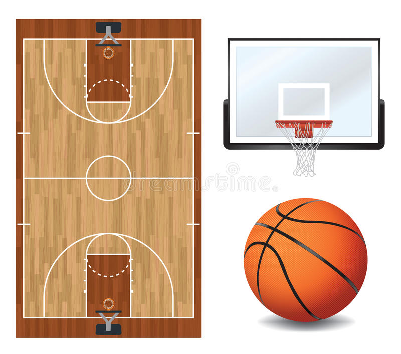
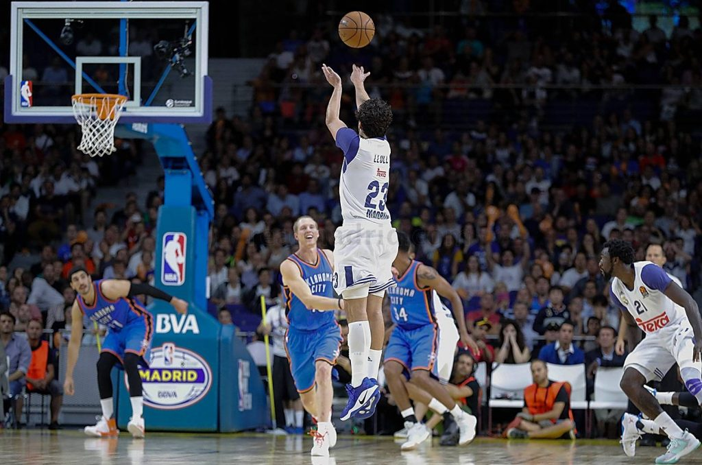

Elementos del básquetbol
Los principales elementos para la práctica de básquetbol son:
- Cancha
La cancha de básquetbol tiene forma rectangular y debe ser llana y estar libre de obstáculos. Mide 15 metros de ancho por 28 de largo y está dividida en dos porciones por una línea al medio, en la que hay un círculo de 3,6 metros de diámetro.
En cada extremo de la cancha hay un aro, suspendido a unos 3 metros del suelo, que está ubicado en un área semicircular de 4,9 x 8,32 metros y que separa el área de tiro de 2 puntos del área de tiro de 3 puntos.
- Canasta
La canasta de básquetbol está formada por un aro (con una red), en el que se introduce el balón para realizar anotaciones. El aro de básquetbol está sujetado al tablero, que mide 1,05 de alto por 1,80 de largo. La canasta debe estar ubicada a 3,05 m del suelo y su aro debe estar hecho en acero y unido a la red por doce puntos.
- Balón
El balón de básquetbol tiene una forma esférica y su tamaño varía de acuerdo a la categoría y tipo de juego. Los balones de básquetbol profesional masculino miden entre 75 y 78 cm y los balones de básquetbol profesional femenino miden entre 72 y 74 cm.
Son balones con una gran capacidad de rebote y suelen estar formados por una cámara recubierta de materiales como cuero, goma o algún otro material sintético de superficie rugosa. El color más usado en balones de básquetbol es el naranja, pero los hay de muchos colores, como negro o blanco, azul y rojo.
- Indumentaria
Los jugadores de básquetbol tienen un uniforme que suele consistir en una camiseta numerada sin mangas (o de manga corta, no está permitida la camiseta de manga larga), pantalones cortos y zapatillas.
